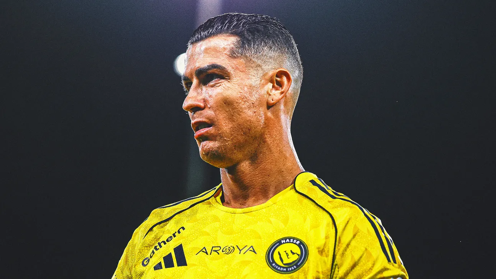

Cristiano Ronaldo has played for five professional clubs throughout his career, along with his time at his youth club. As of May 2026, he is currently under contract with Al Nassr until 2027.
Cristiano Ronaldo scored 451 goals in 438 competitive appearances for Real Madrid between 2009 and 2018, making him the club's all-time leading goalscorer. He also recorded over 131 assists and won 16 major trophies during his time in Spain, including four UEFA Champions League titles.